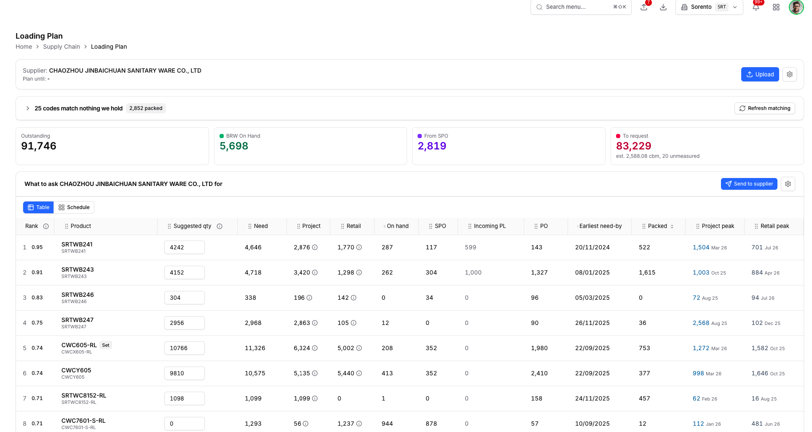
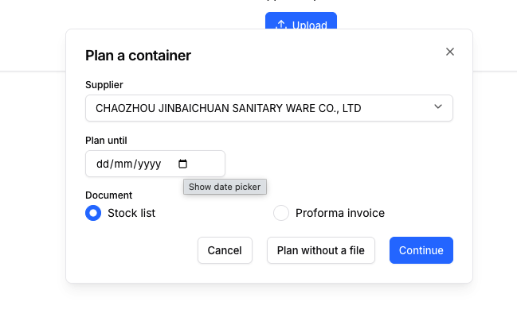
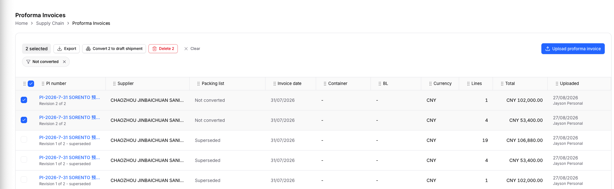
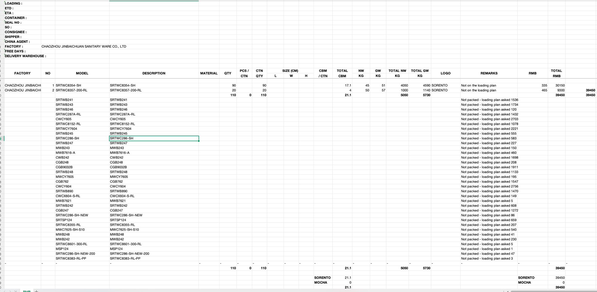
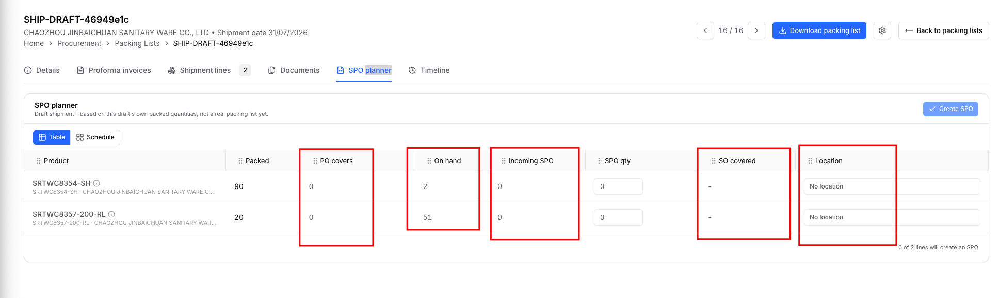

feat/scm-fulfilment-feedback-p4 off main #353. Plan file documentation/plans/scm/PLAN-scm-fulfilment-feedback-p4.md, UAC alongside. Annotate anything; answer Q1-Q7 at the bottom.POST /container-requests/build "persists nothing". Nothing to list, cancel, delete or reopen. Two Upload buttons (header card + empty state).

scm.loading_plan table (migration 440 adds status, plan_horizon_date, document_kind, source_attachment_id, line_edits JSONB, sent_at, cancelled_at/by). List at /scm/loading-plan, record at /scm/loading-plan/{id}. Build is scoped by plan_id; typed quantities persist via Save. "Plan until" is renamed Sales order cut-off everywhere, same words as reorder planning.ReorderRunsGrid)| Started ▾ | Supplier | SO cut-off | Document | To request | Sent | Opened | Status | |
|---|---|---|---|---|---|---|---|---|
| 27/08/2026 14:02 | CHAOZHOU JINBAICHUAN SANITARY WARE CO., LTD | 30/09/2026 | Stock list 27/07/2026 | 83,229 est. 2,588 cbm | ✉ 27/08 14:40 | 27/08 15:10 | Sent | ⊘ 🗑 |
| 26/08/2026 09:15 | KAILU SANITARY | - | Proforma invoice PI-2026-7-17 | 4,120 est. 61 cbm | - | - | Planning | ⊘ 🗑 |
| 20/08/2026 11:00 | CHAOZHOU JINBAICHUAN SANITARY WARE CO., LTD | 31/08/2026 | No file | 61,004 | ✉ 20/08 11:30 | Not opened | Cancelled |
Whole row opens the plan. Row actions: Cancel (ConfirmActionDialog, retires the supplier link, Q4) and Delete (ConfirmDeleteDialog; refused once sent, Q5). Filter default "Active" = Planning + Sent. listingKey scm.dashboard.view::loading-plans.
Today (two dialogs)

Continue opens a SECOND dialog (StockListUploadDialog) for the file.
Proposed (one dialog)
Confirm = create the plan row + apply the file + open /scm/loading-plan/{id}. "No file" turns the primary into Start plan. The existing two-step (useTwoStepUpload) runs in place; nothing is re-implemented.
Header card (Supplier / Plan until / Upload / gear) deleted. Unmatched queue, four stat cards, "What to ask ... to cover until 30/09/2026" heading + Table/Schedule + grid unchanged. Save (N) = rows whose typed qty differs from the engine's; Send saves first. Cancelled plan: grid read-only, Save/Send disabled with the reason.
| Rank | Product | Suggested | Need | Project | Retail | On hand | SPO | Incoming PL | PO | Earliest | Packed | Project peak | Retail peak |
|---|---|---|---|---|---|---|---|---|---|---|---|---|---|
| 1 · 0.95 | SRTWB241 | 4242 | 4,646 | 2,876 | 1,770 | 287 | 117 | 599 | 143 | 20/11/2024 | 522 | 1,504 Mar 26 | 701 Jul 26 |
Every underlined figure opens PlanRowDialog (shell copied from the reorder-revamp lane into scm/components/, one owner after merge). Popovers and their PopoverPortal workarounds go.
Same shapes as reorder planning's six lightboxes (revamp lane, PlanRowDialogs.tsx: tabs Open · History, document rows, › expands to lines). Mocked below for every column; the SPO planner reuses On hand and SPO (section 7).
| Sales order | Customer | Project | Agent | Price | Qty | Required |
|---|---|---|---|---|---|---|
| SO404118 | PEMBINAAN MAJU SDN BHD | Taman Sri Bayu Ph2 | SEAN | RM 318.00 | 1,200 | 30/09/2026 |
| SO403990 | E-REGION BUILDER SDN BHD | Bandar Rimbayu | LCL | RM 312.00 | 900 | 15/10/2026 |
| Total | 2,876 | |||||
| Sales order | Customer | Project | Agent | Price | Qty | Required |
|---|---|---|---|---|---|---|
| SO404352 | SYARIKAT PERNIAGAAN KL | - | SEAN III | RM 330.00 | 240 | 20/09/2026 |
| SO404201 | HARDWARE MART SDN BHD | - | AMY | RM 335.00 | 180 | 28/09/2026 |
| Location | On hand | Reserved | Free | SO qty | SPO qty | Available | PO qty | |||||||||||||||||||
|---|---|---|---|---|---|---|---|---|---|---|---|---|---|---|---|---|---|---|---|---|---|---|---|---|---|---|
| ⌄ | BRW | 201 | 0 | 201 | 96 | 90 | 105 | 143 | ||||||||||||||||||
| ||||||||||||||||||||||||||
| › | WH3 | 86 | 0 | 86 | 0 | 27 | 86 | 0 | ||||||||||||||||||
| Site pools | 287 | |||||||||||||||||||||||||
location-stock?product_id= pool rows + documents reader. Sum = the cell (287).| SPO | Packing list | To | Qty | Received | ETA | Status |
|---|---|---|---|---|---|---|
| CRM-SPO-e372b1e9 | FSCU8103365 | BRW | 90 | 0 | 27/07/2026 | In transit |
| CRM-SPO-1a0c77 | PL-2608-001 | WH3 | 27 | 0 | - | Draft |
| Total | 117 | |||||
on_order / spo_allocations no longer feed it. History = received SPO lines, same reader.| Packing list | Container | Supplier | Qty | ETA | Status |
|---|---|---|---|---|---|
| FSCU8103365 | FSCU8103365 | JINBAICHUAN | 399 | 27/07/2026 | In transit |
| PL-2608-001 | - | JINBAICHUAN | 200 | - | Draft |
| Total | 599 | ||||
inbound_shipment_lines for the product (Q1 of part 3: shown, never subtracted). Opens the packing list on click.| PO | Supplier | Qty | Still to come | Unit price | Issued | ETA | Status |
|---|---|---|---|---|---|---|---|
| PO-24118 | JINBAICHUAN | 200 | 143 | CNY 335.00 | 28/04/2026 | 15/09/2026 | Partly received |
| PO-24090 | JINBAICHUAN | 100 | 0 | CNY 330.00 | 30/03/2026 | 28/06/2026 | Closed |
purchase_order_lines for the product, open first (the qty the PO cell counts), then history. Same columns as reorder planning's PO lightbox.| Column | Dialog tabs | Data |
|---|---|---|
| Project / Retail / Project peak / Retail peak | Open lines · 12-month history (peak opens on history) | build payload (include_lines) + history payload, both exist |
| On hand | Site pool stock, › documents | GET /reorder-runs/location-stock?product_id= (exists, product-only) |
| SPO · Incoming PL · PO | Open · History | NEW GET /container-requests/drill?supplier_id&product_id&kind=: the row form of the predicate the cells sum. SPO and PO both read purchase_order_lines (SPO-kind vs PO-kind); Incoming PL reads unreceived inbound_shipment_lines. Cell == Σ open rows by construction; the SPO cell moves off on_order to this reader. |
suppliers.email only; no way to add an address. A chat row is written on EVERY send and always reads skipped: "No chat channel is linked to this supplier yet." Nothing records whether the supplier opened the link./c/sorento/supplier-request/… · 30-day link, previous link retiredrecipients JSONB, opened_at, last_opened_at, open_count.Requests sent (on the record)
| Sent | Channel | To | Status | Opened | |
|---|---|---|---|---|---|
| 27/08 14:40 | sales@jinbaichuan.cn, ms.tee@… | Sent | 3 times · last 27/08 15:10 | PDF · XLSX · Copy link | |
| 20/08 11:30 | Mr Chen (JBC) | Sent | Not opened yet | XLSX · link retired |
The public page (and its downloads) stamps the open on the notice: best-effort write on GET, never blocks the page. Plan status stays Sent; an open is an event, not a status.
SheetModel, three renderers. With a retained stock list the XLSX is the supplier's own workbook opened with openpyxl and column K written into it, every existing cell / merge / fill / font / width untouched. PDF and the public page render the same model with rowSpan for the merged 序号 / 体积 / 总体积. Golden test on the committed 2026-7-27 库存明细.xlsx.Rendered from 库存明细.xlsx (first family), column K added
| 金百川库存表 2026年7月27日 | ||||||||||
|---|---|---|---|---|---|---|---|---|---|---|
| 序号 | 型号 | 商标 | 规格 | 品名 | 包装好库存 | 空瓷 | 体积(cbm) | 总体积(cbm) | 备注 | 需装数量 Qty to load |
| 1 | SRTWC286-SH-150NEW | S | 150 | 连体马桶 | 0 | 0 | 0.17 | 540.43 | ||
| SRTWC286-SH-180 | S | 180 | 连体马桶 | 0 | 101 | |||||
| SRTWC286-SH-200NEW | S | 200 | 连体马桶 | 288 | 243 | 288 | ||||
| SRTWC286-SH-250NEW | S | 250NEW | 连体马桶 | 1509 | 1,432 | |||||
| 39 | SRTWB241 | S | SRTWB241 | 不在库存表 / Not on your list | 4,242 | |||||
| 合计： | =SUM(F) | =SUM(G) | =SUM(I) | =SUM(K) | ||||||
Styles are theirs: title Calibri 22 bold merged, header 14 bold centred, data 宋体 14 centred, B:G + J yellow, a zero in 包装好库存 red, widths A 6 / B 28.7 / … / J 13.9. Column K copies J's style. Requested rows absent from their list are appended below the last family with a continuing 序号 (Q1: K vs 备注). Without a file: same 10+1 header, no merges (we do not know their families), 商标 = company letter, 品名 = product name.
Today

Bulk strip: Export · Convert 2 to draft shipment · Delete 2 · Clear; CTA "Upload proforma invoice". Convert opens a dialog (packing list select).
Proposed
"Convert N to packing list" is disabled with "Select invoices first" until rows are ticked. Convert runs at once: one NEW draft packing list, every line places what it has left, toast "Packing list PL-2608-003 created with 12 lines" + navigate. The only interruption is capacity: the existing OverCapacityDialog ("This will not fit", reason required, Convert anyway). The words "draft shipment" leave this screen. The PI DETAIL keeps its Convert with the per-line quantity editor (a partial placement, Q9 split, is a deliberate act on one invoice). "Add to existing draft" is dropped everywhere (captain, Q6).
| Item | Cause found | Fix |
|---|---|---|
| SHIP-DRAFT-46949e1c random number | No document_numbering_rule row for inbound_shipment_draft, so the uuid4[:8] fallback at proforma_invoice_service.py:972 fires every time. | Migration 442 seeds PL-{YYMM}-{NNN} (Q2); the random fallback is deleted (service raises numbering_rule_missing). /new without a number uses the same rule (AC-F3.3 stands). Renamed to the container number when known, as today. |
| Notes "Draft from proforma invoice(s): …" | _draft_notes() writes provenance into the user's notes field; the PI tab already carries it. | No notes written. An over-capacity override keeps its reason as a Timeline entry ("Converted over capacity: … Reason: …"), not a notes string. |
| Supplier select too long | SupplierCombobox label = Name (CODE). | Label = name only; searchText keeps the code so typing a code still finds it. Applies to Details, /new, per-line factory, PI detail. |
| Edit on Shipment lines jumps to Details | No redirect visible in layout.tsx; beginEdit only snapshots the draft. Tab-bar remount or pager suspected. | Reproduce in the browser first (Phase 1), fix, AC-F5 keeps the URL on /lines through Edit / Save / Cancel. |
| Download shows rows not on the shipment | consolidated_packing_list.py:642-653 appends one row per loading-plan product not packed ("Not packed - loading plan asked N"); :188-206 writes "Not on the loading plan" / "asked X, packed Y" into REMARKS. | Both deleted. REMARKS = the supplier's own remark. A cell-by-cell fidelity test against the committed FSCU8103365.xlsx (header block, merges, widths, row heights 35.1 / 15.95, Calibri 12, bold red subtotals, number formats, formulas, V-column block amount, SORENTO/MOCHA footer, 订单号/柜号/封号) drives any remaining formatting fixes. |


Proposed
| Product | Packed | PO covers | On hand | Incoming SPO | SPO qty | SO covered | Location | |
|---|---|---|---|---|---|---|---|---|
| ▾ | SRTWC8354-SH SRTWC8354-SH · JINBAICHUAN | 90 | 90 2 of 3 POs | 2 | 0 | 90 | 75 15 unassigned | 2 locations 15 unassigned |
Destinations · 90 / 90BRW ▾60 ✕
WH3 ▾15 ✕
Unassigned (free stock at BRW)15
+ Add location | ||||||||
| ▸ | SRTWC8357-200-RL | 20 | 0 | 51 | 0 | 0 | - | No location |
| PO | Issued | Expected | Open | Take | |
|---|---|---|---|---|---|
| ☑ | PO-25-0912 | 22/09/2025 | 30/11/2025 | 60 | 60 |
| ☑ | PO-26-0107 | 08/01/2026 | 28/02/2026 | 40 | 30 |
| ☐ | PO-26-0330 | 30/03/2026 | 31/05/2026 | 50 | 0 |
| Sales order | Customer | Class | Required | Open | Take | Location | |
|---|---|---|---|---|---|---|---|
| ☑ | SO-2202 | PEMBINAAN MAJU SDN BHD | Project | 30/09/2026 | 60 | 60 | BRW |
| ☑ | SO-2210 | HARDWARE MART SDN BHD | Retail | 15/10/2026 | 40 | 15 | WH3 |
| ☐ | SO-2231 | SYARIKAT PERNIAGAAN KL | Retail | 30/11/2026 | 25 | 0 | - |
| Unassigned (free stock at BRW) | 15 | ||||||
| Location | On hand | Reserved | Free | SO qty | SPO qty | Available | PO qty | |||||||||||||||||||
|---|---|---|---|---|---|---|---|---|---|---|---|---|---|---|---|---|---|---|---|---|---|---|---|---|---|---|
| ⌄ | BRW | 2 | 0 | 2 | 60 | 0 | -58 | 90 | ||||||||||||||||||
| ||||||||||||||||||||||||||
| › | WH3 | 0 | 0 | 0 | 40 | 0 | -40 | 0 | ||||||||||||||||||
| Site pools | 2 | |||||||||||||||||||||||||
location-stock?product_id=, site pools only, › opens the documents behind SO / SPO / PO qty. Total = the cell (2).| SPO | Packing list | To | Qty | Received | ETA | Status |
|---|---|---|---|---|---|---|
| No SPO is on its way to a site pool for this product. Nothing is double-counted against this container. | ||||||
PO covers / SO covered: lightboxes with checkboxes, suggested takes pre-ticked, same client cascade as today. On hand / Incoming SPO: the reorder lightboxes of section 2 (On hand, SPO). Location: the expanded row holds the destinations and replaces LocationSplitPopover. Three popovers deleted.
| Slice | Content | Days | Slot |
|---|---|---|---|
| S1 | Plan row + list + Plan-a-container dialog + record toolbar + Save/edits + cancel/delete (migration 440) | 4.5 | A |
| S2 | Shared PlanRowDialog, eight lightboxes, drill endpoint | 3.5 | A |
| S3 | Send dialog, recipients, chat via composer path, open tracking (441) | 3.5 | A |
| S6 | Numbering seed (442), no notes, name-only supplier, edit-on-tab, workbook extras + fidelity test | 3 | B first (two verified defects) |
| S4 | SheetModel, XLSX-is-their-file, PDF + public page, golden test | 3 | B |
| S5 | PI Start ▾, gear, direct convert | 1.5 | B |
| S7 | SPO planner lightboxes + expanded-row locations | 3 | B |
~22 dev-days. Each slice: Phase 1 FE against mocks (browser-verified) → Phase 2 BE test-first → review. Migrations 440 → 441 → 442 chained onto main's head at branch time (438 today, 439 pending #354). Cross-lane: the reorder-revamp lane owns PlanRowDialogs.tsx + the toolbar leftActions prop today; copied here, deduplicated at whichever merge comes second. No stack slot yet for this lane.
| # | Decision |
|---|---|
| Q1 | Asked quantity = appended column K 需装数量 / Qty to load; their ten columns untouched. |
| Q2 | Draft packing list number = PL-YYMM-NNN, monthly sequence. |
| Q3 | Email + chat both in S3; chat = WeChat via Respond.io; channel connection / template seed = separate Respond.io task with its own go. |
| Q4 | Cancelling a plan retires the live supplier link. |
| Q5 | A sent plan cannot be deleted; cancel instead. |
| Q6 | "Add to existing draft" dropped everywhere (list and PI detail). |
| Q7 | Empty Sales order cut-off = every open order counts. |
| A1 | SPO figures and lightbox read the purchase-order table (SPO uploads will land there); one reader for PO and SPO. |
| A2 | SPO planner expanded row = destinations only, full width; coverage in the SO covered lightbox. |
Say GO to start S1 (slot A) + S6 (slot B), or annotate.